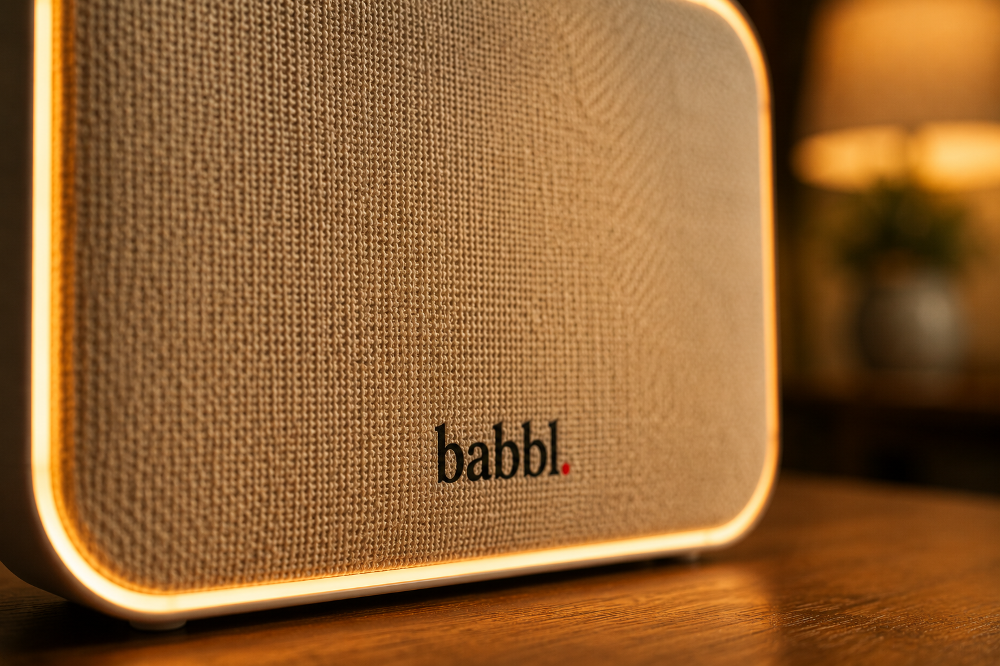

Privacy
Persoonlijke gegevens blijven persoonlijk
Privacy is geen bijzaak bij Babbl. Het is een van de kernprincipes waarop het hele product is gebouwd. Uw gegevens zijn van u.
Kom op de wachtlijst
Privacy is geen bijzaak bij Babbl. Het is een van de kernprincipes waarop het hele product is gebouwd. Uw gegevens zijn van u.
Kom op de wachtlijst
Dat is een bewuste keuze. Gevoelige informatie over uw dagelijks leven hoort niet thuis op servers van derden. Het hoort bij u, thuis.
Deze principes liggen ten grondslag aan elk onderdeel van Babbl.
Persoonlijke gegevens worden zo veel mogelijk verwerkt en opgeslagen op het Babbl-apparaat bij u thuis. Niet op externe servers.
U bepaalt wat Babbl onthoudt, wat er gedeeld wordt met familie en welke organisaties toegang krijgen tot uw informatie. Altijd u.
U kunt altijd opvragen wat Babbl weet en wat er met die informatie gebeurt. Geen verborgen processen, geen onduidelijke dataverzameling.
Organisaties zoals uw huisarts of apotheek krijgen alleen toegang als u daar expliciet toestemming voor geeft. Nooit automatisch.
U kunt op ieder moment vragen om gegevens te verwijderen. Babbl bewaart alleen wat u wilt dat het bewaart.
Alle communicatie is versleuteld. Toegang tot uw gegevens is strikt beperkt tot wat nodig is voor de ondersteuning die u vraagt.
Babbl is ontworpen om zo min mogelijk persoonlijke informatie buiten uw huis te sturen. Dat onderscheidt Babbl van veel andere digitale hulpmiddelen.
Gegevens die lokaal blijven:
Alleen wanneer Babbl verbinding nodig heeft met een externe dienst — en u daar toestemming voor geeft — verlaat informatie het apparaat. En dan alleen wat strikt noodzakelijk is.
Familie kan via Babbl betrokken blijven — maar alleen wat u zelf wilt delen. U heeft altijd de controle.
Babbl deelt nooit automatisch informatie met anderen. Elke vorm van delen vraagt uw expliciete toestemming. U kunt op ieder moment aanpassen wat er gedeeld wordt en met wie.

Babbl is ontworpen in overeenstemming met de Algemene Verordening Gegevensbescherming (AVG) en overige Europese privacywetgeving. Uw rechten als gebruiker — inzage, correctie, verwijdering — zijn verankerd in het ontwerp van Babbl, niet slechts in de kleine lettertjes.
Meer details over ons privacybeleid volgen bij de lancering. Heeft u nu al vragen? Neem contact met ons op via privacy@babbl.nl.
Schrijf u in voor de wachtlijst en ontvang updates over de ontwikkeling van Babbl.